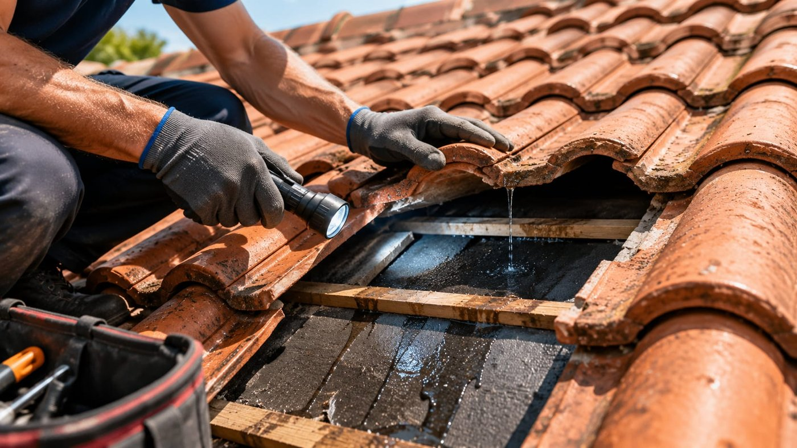
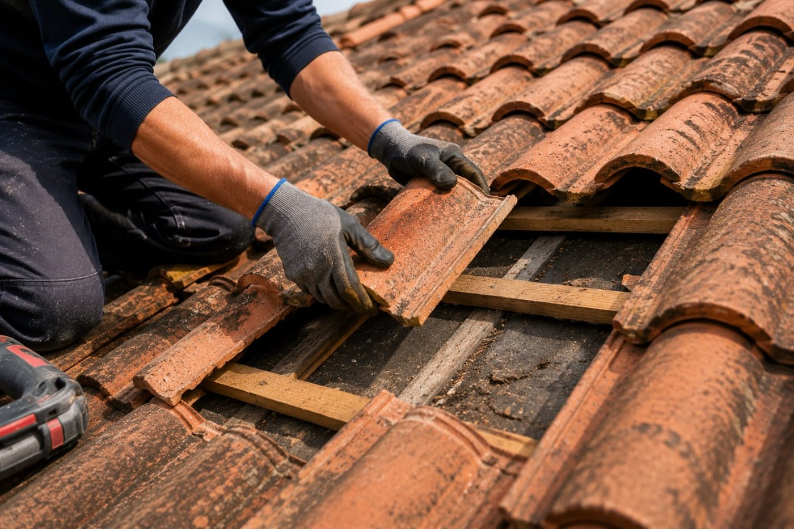
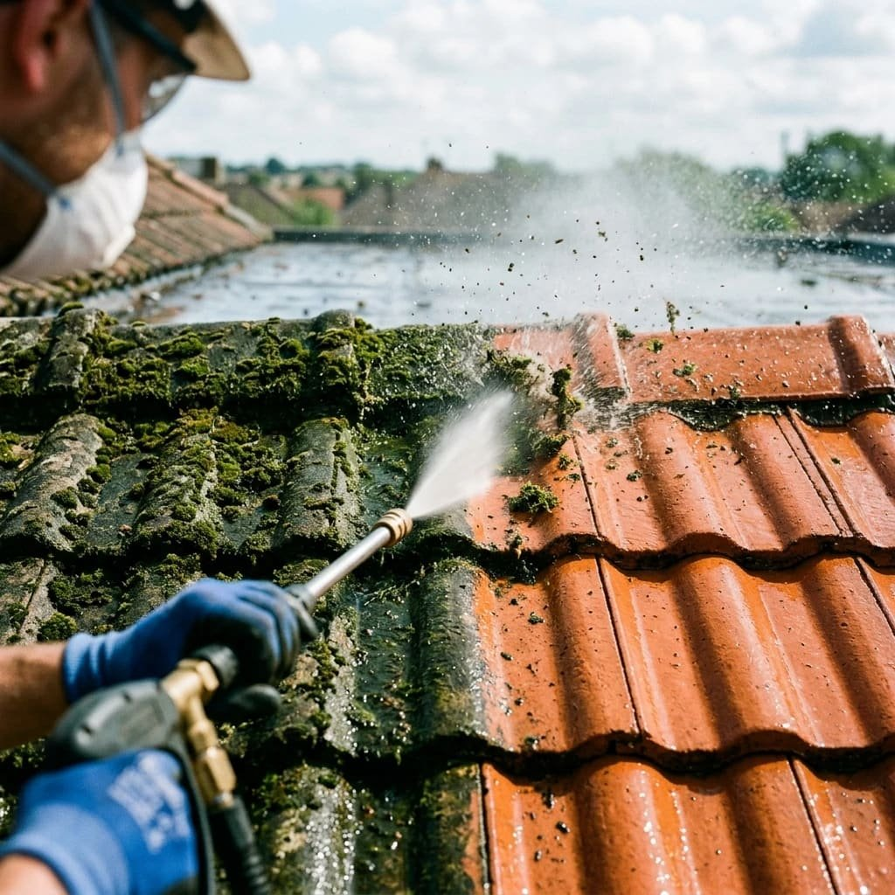
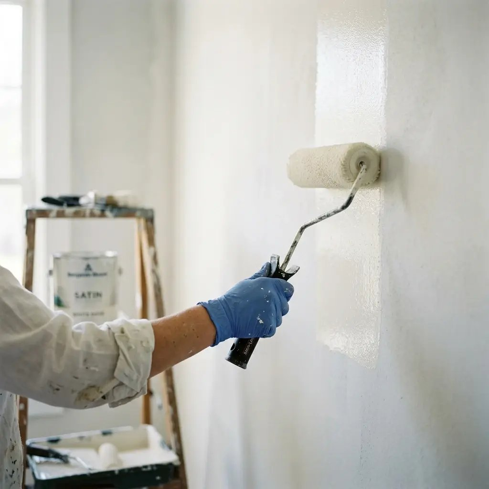
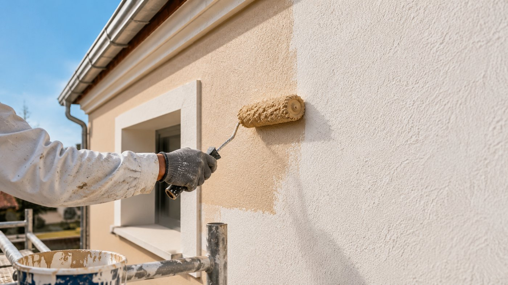
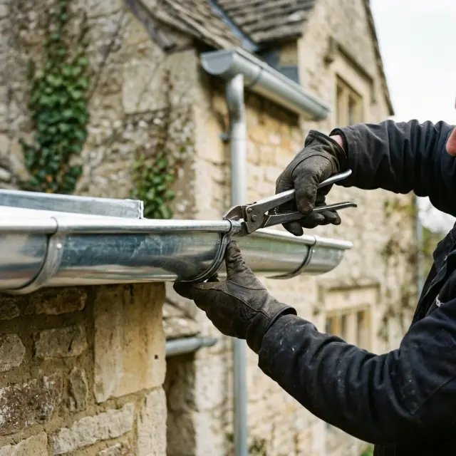
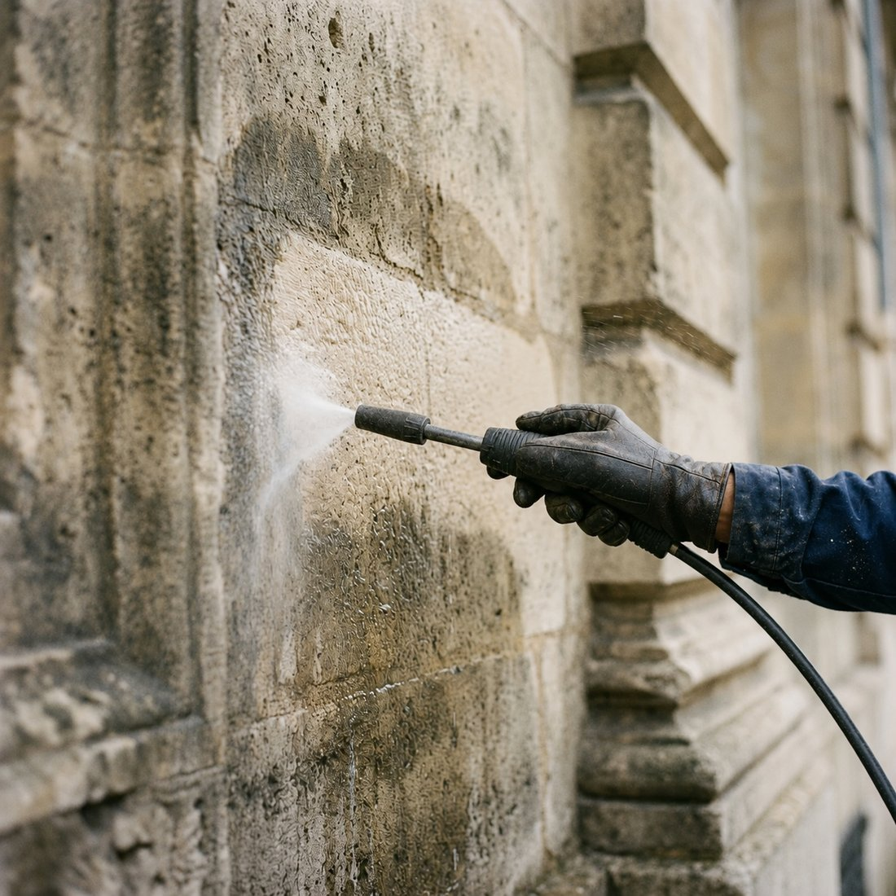
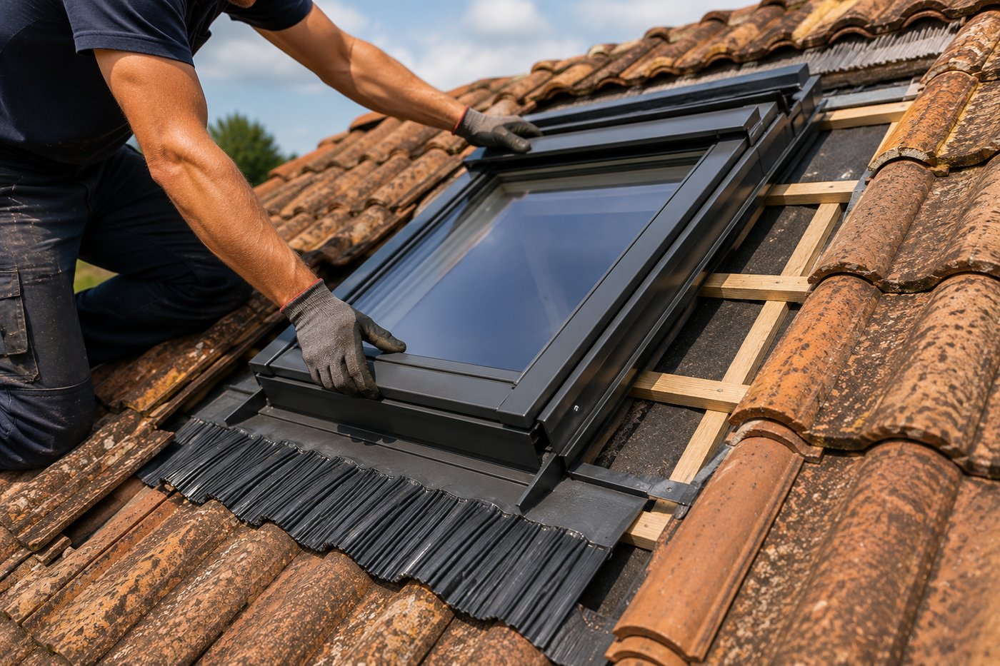
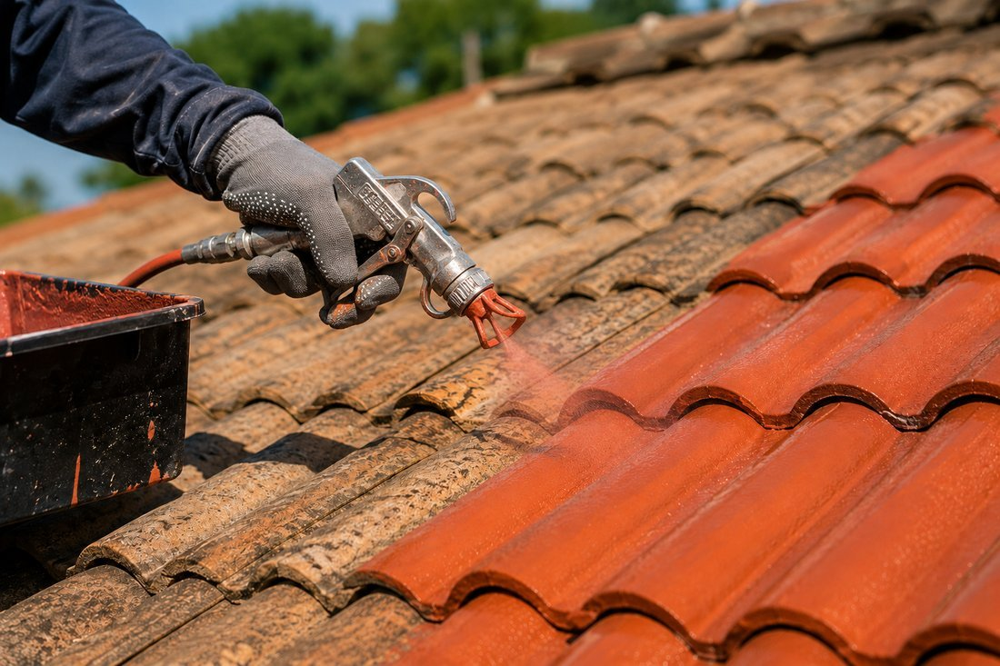

Basés à Carcassonne, nous intervenons dans le Carcassonnais et au pied de la Montagne Noire pour la rénovation et la réparation de toiture, la couverture neuve, la zinguerie, le démoussage, les fenêtres de toit, le ravalement de façade et la peinture.
Installés à Carcassonne (11000), nous intervenons dans le Carcassonnais et au pied de la Montagne Noire : Trèbes, Limoux, Pennautier, Villemoustaussou, Pezens, Berriac, Cazilhac, Palaja, Montréal, Arzens, Leuc, Couffoulens, Conques-sur-Orbiel, Lavalette et Alairac.
L'Aude impose ses règles : tuile canal sur les maisons de village et les centres anciens, tuile romane et tuile mécanique sur les maisons plus récentes. Le cers et le vent marin soulèvent les tuiles mal fixées, le soleil fatigue les matériaux et les orages d'automne mettent les gouttières à rude épreuve : nous choisissons des fixations, des closoirs et des écrans sous-toiture capables de tenir. Le déplacement pour établir un devis est toujours gratuit.
Notre ville, route de Montréal : réparation, rénovation de toiture et zinguerie, de la Bastide aux quartiers pavillonnaires.
Commune voisine sur le canal du Midi : remaniement de tuile canal et gouttières neuves.
Haute vallée de l'Aude : maisons anciennes, couverture et démoussage.
Villas et maisons récentes : entretien de toiture, nettoyage et pose de Velux.
Maisons de village : tuiles déplacées après un coup de cers, faîtages refaits.
Pavillons : rénovation de couverture et traitement hydrofuge.
Maisons de bourg : réparation de fuites et remaniement de toiture.
Villas et lotissements : couverture neuve et zinguerie.
Maisons récentes : nettoyage, démoussage et peinture de toiture.
Village du Razès : maisons en pierre, tuile canal et génoises reprises.
Mas et dépendances : grandes couvertures en tuile canal.
Maisons de village : petites réparations et rives refaites.
Maisons anciennes : remaniement de toiture et isolation.
Au pied de la Montagne Noire : toitures, gouttières et façades.
Pavillons : remplacement de tuiles cassées et descentes d'eau.
Villas : couverture neuve, Velux et entretien de toiture.

Inspection, diagnostic précis et travaux de remise à neuf pour prolonger la vie de votre toit et assurer son étanchéité.
En savoir plus
Installation complète de toitures traditionnelles ou modernes, avec des matériaux adaptés à vos besoins et au climat local.
En savoir plus
Nettoyage professionnel, traitement préventif et entretien régulier pour préserver l'intégrité et l'esthétique de votre couverture.
En savoir plus
Nous réalisons tous vos travaux de peinture pour murs, plafonds et boiseries. Choix de couleurs, conseils personnalisés et finitions impeccables pour un intérieur qui vous ressemble.
En savoir plus
Protection et embellissement de vos façades, boiseries et ferronneries. Des produits résistants aux intempéries pour une durabilité et un esthétisme préservés.
En savoir plus
Installation et réparation de gouttières, chéneaux et éléments en zinc pour une évacuation optimale des eaux pluviales et une protection accrue de votre façade.
En savoir plus
Redonnez un coup de jeune à vos murs extérieurs. Nous nettoyons et traitons vos façades pour une protection durable et une esthétique renouvelée.
En savoir plus
Pose et remplacement de fenêtres de toit Velux pour apporter plus de lumière et améliorer votre confort.
En savoir plus
Redonnez de l'éclat à votre toiture grâce à une peinture professionnelle résistante aux intempéries et aux UV.
En savoir plusHorizon Sud Couverture se déplace gratuitement pour évaluer vos travaux et vous remettre un devis clair, sans engagement.